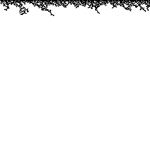
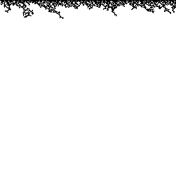

Let positive integers w and h be the width and height of an XY image, in pixels, respectively.
Let X and Y be the sets of nonnegative integers less than w and h, respectively.
Let P be the set of products of multiplying every element of X by every element of Y.
Number the pixels of the image 0, 1, 2, and so on from top to bottom and left to right.
A pixel is black if its number is in P, otherwise it is white.
Example
For the XY image with width w = 3 and height h = 2, the sets defined above become:
 
